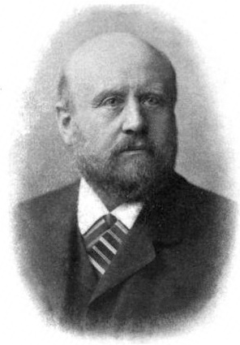
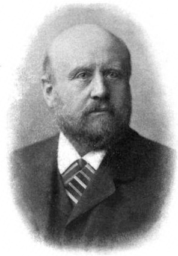

Первопроходцы космического мира
Первыми учеными, которые начали изучение астероидов, были
 Генри Норман Рассел,
Генри Норман Рассел,
 Макс Вольф и
Гуго фон Зеелигер.
Макс Вольф и
Гуго фон Зеелигер.
Генри Норман Рассел (1877-1957), британский астроном, был пионером использования звёздных
изображений
для определения траекторий и скоростей астероидов. Рассел также проделал значительную работу по
классификации астероидов и создал систему нумерации, которая до сих пор используется.
Макс Вольф (1863-1932), немецкий астроном, открыл более 200 астероидов и разработал методы
визуальной фотографии, которые позволили получить более точные изображения этих объектов.
Гуго фон Зеелигер (1863-1948), немецкий астроном, известен своими работами по классификации
астероидов и
разработке методов для измерения их размеров и формы.
В числе его значимых достижений можно отметить открытие 204 астероидов.
Что касается изучения комет, первыми тремя учеными, которые занимались этой областью, были
 Тайхо Браке,
Тайхо Браке,
 Ги Деллегур
и
Фред Лоу.
Ги Деллегур
и
Фред Лоу.
Тайхо Браке (1546-1601) был датским астрономом. Он сделал множество наблюдений и измерений комет,
разработал свою собственную теорию их движения и пришел к выводу, что кометы движутся по
эллиптическим орбитам вокруг Солнца.
Ги Деллегур (1747-1817), французский астроном, проводил наблюдения, измерял и записывал данные о
кометах и был первым,
кто использовал спектроскопию для анализа состава кометного хвоста.
Фред Лоу (1921-2014), американский астрофизик, применял радиоастрономических методы для изучения
состава и структуры комет.
Лоу был одним из основателей и первым директором Национального управления по астрономическим и
источникам геофизической информации (National Space Science Data Center) в NASA.